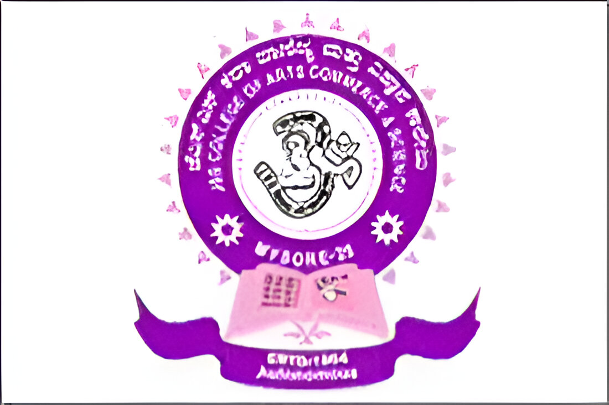

MCA (Master of Computer Applications)
JSS College of Arts, Commerce, and Science, Mysuru
CGPA: 8.47
Passout: 2024

BCA (Bachelor of Computer Applications)
Yuvaraja's College, Mysuru
CGPA: 7.44
Passout: 2022